Family
Master
Up to 4 guests, king bed, 2 single beds, double hot tub and a balcony facing the garden
28 m²up to 4 guestshot tub
Fifteen suites, garden, pool, spa, cinema, table and fire.
A place to live Alto Paraíso with comfort, company and time

The table is part of the house. Breakfast is included and served from 7:30 to 10:30 am
Start with the Master, Presidential or Luxury suites and see how they relate to the pool, breakfast and garden
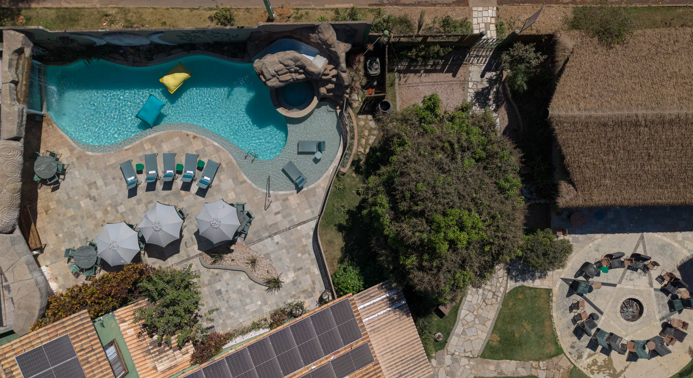
The original core of the property, tied to the memory of the house and part of the accommodation
Up to 4 guests, king bed, 2 single beds, double hot tub and a balcony facing the garden
5 units with a balcony and a view of the garden or the pool
Ground-floor suite with a living area, balcony and hot tub

Arrival, transfer to Alto Paraíso, check-in and a dinner to open the group experience
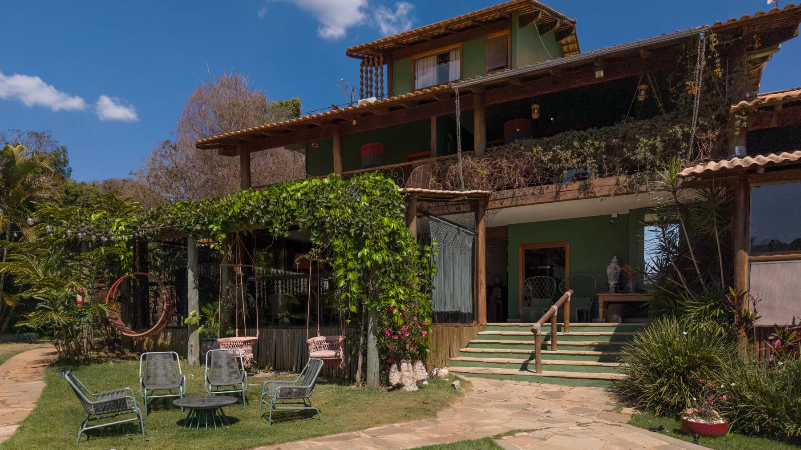
Weddings, celebrations, retreats and immersions can combine a hall, garden, covered areas and fifteen suites on the same property
After the road, the sun and the water, the rhythm changes. Pool, hot tub, spa, table and fire help stretch the day and give the return home its own pleasure


Tati arrived in Alto Paraíso in 2009. The house was finished in 2011 and, at the end of the following year, began to receive guests. It grew into rooms, gardens and meeting spaces without losing the domestic scale that gave it its origin
In December 2012, the residence began to receive guests. New suites came later, then leisure spaces, wellness areas and gatherings
What ties these phases together is a simple way of occupying the place: coffee in the morning, paths through the garden, shade, water, the table and the fire at the end of the day. The structure grew; the feeling of being in a home remained,
Tati arrives in Alto Paraíso with the wish to build a house
The place begins to be lived in by the family
In December, the house begins to receive guests
A reference seen in Portugal became the masonry of the living room; books, artworks and objects found their place around it.
Pieces from Tidelli enter the routine of the house, especially in the relationship between interior, garden and outdoor life.
Breakfast, the return from the trail, conversation and fire make the spaces change throughout the day.

The living-room masonry was born from a magazine reference and helped give a home to Tati's books
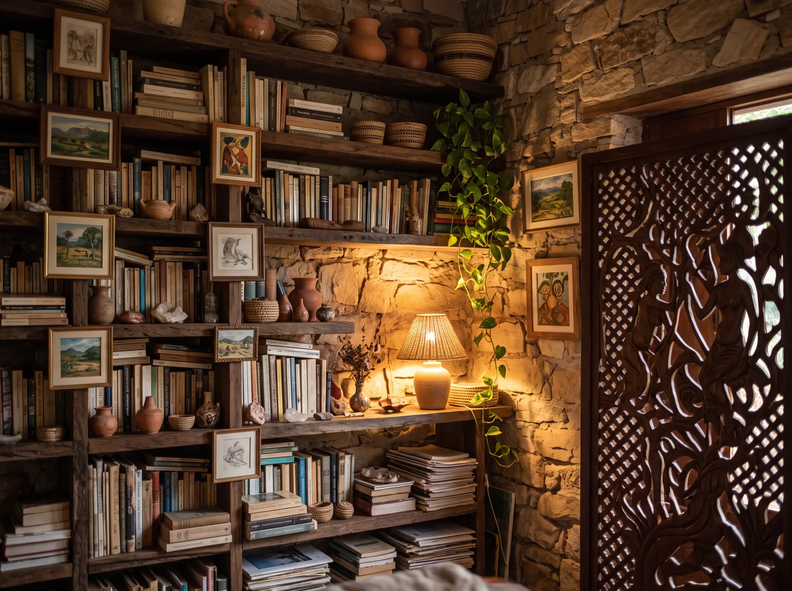
Carybé railings, works from different places and drawings tied to the pool's moon
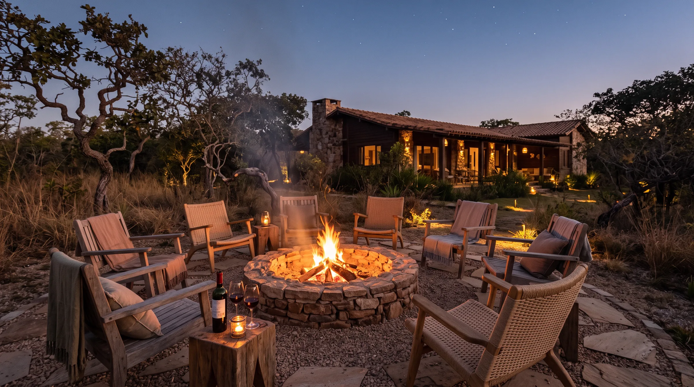
In the dry season, the bonfire brings together wine, conversation and a starry sky
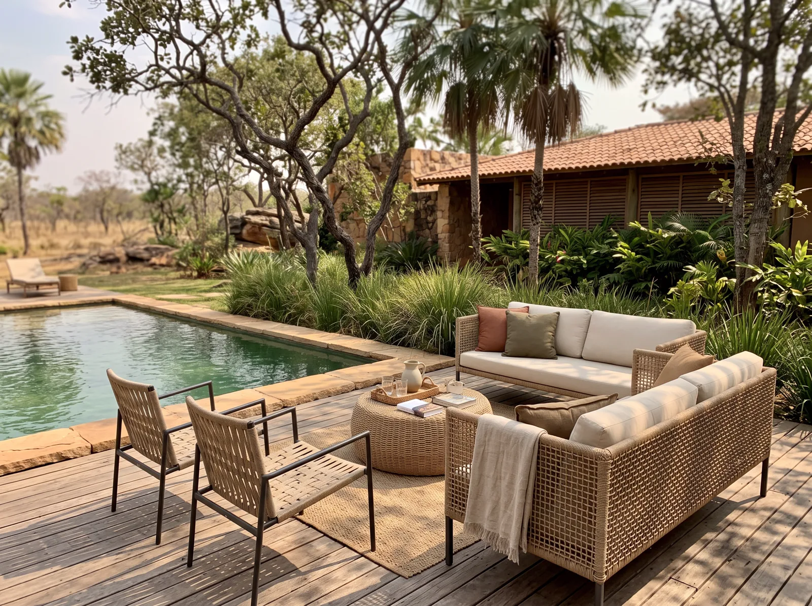
The furniture is part of the house in use, from the pool to the garden, never a showroom apart from daily life
During your stay, the team helps organize outings, schedules, experiences and the use of the spaces. It is a practical, close presence, without the distance of a formal hotel


Choosing gets simpler when capacity, access, view and highlights appear together. Use the filters, compare categories and move on to availability
Filter by capacity, access and highlight
See up to three categories side by side
Go to the engine with dates, guests and category preserved
8 categories shown
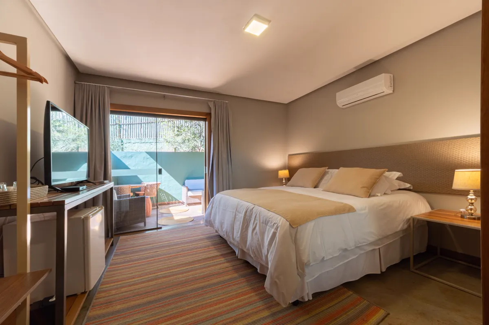
1 queen-size bed. Outdoor area, ground floor.
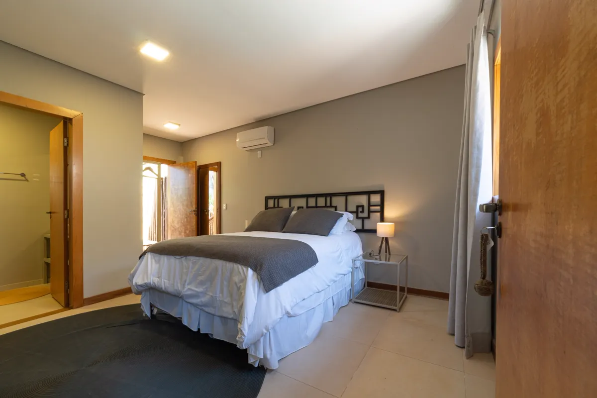
1 queen-size bed + 1 single bed. Main house, 1st floor.
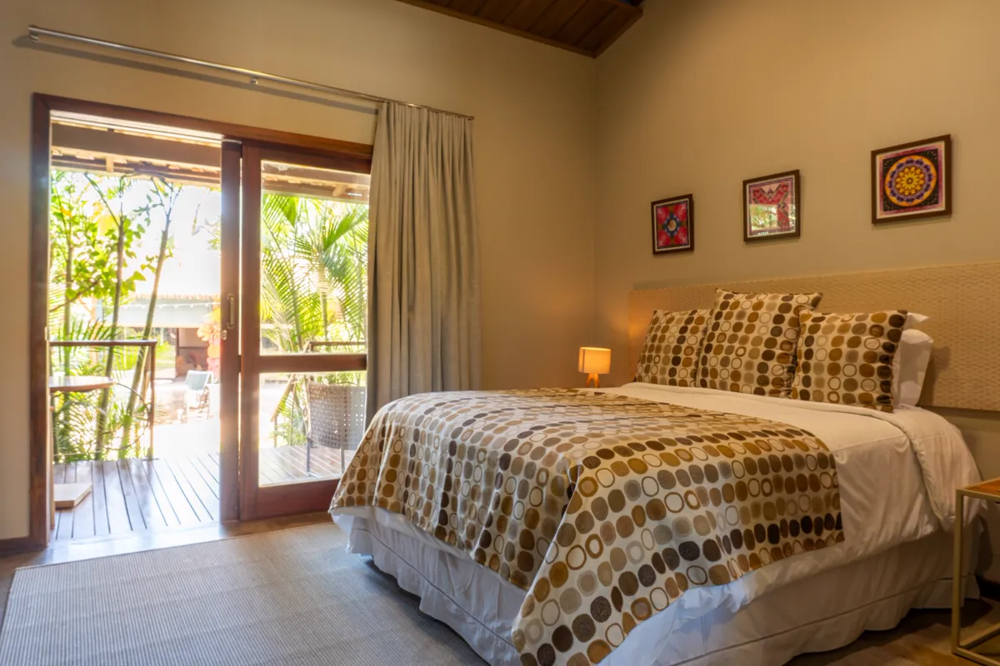
1 queen-size bed. Outdoor area.
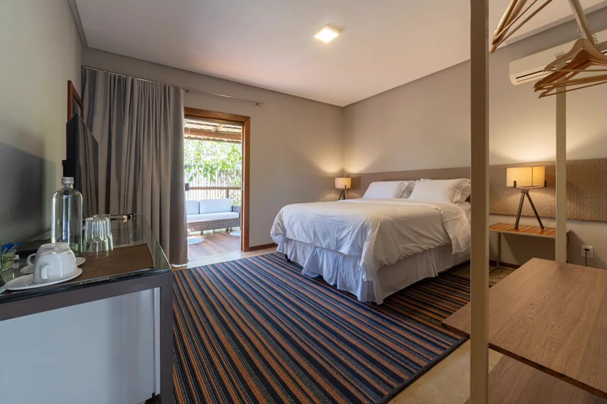
1 queen-size bed. Outdoor area, 1st floor.
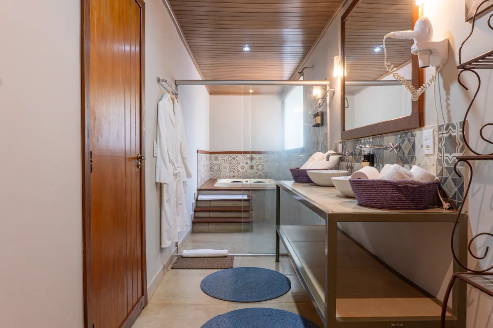
1 queen-size bed. Outdoor area, ground floor.
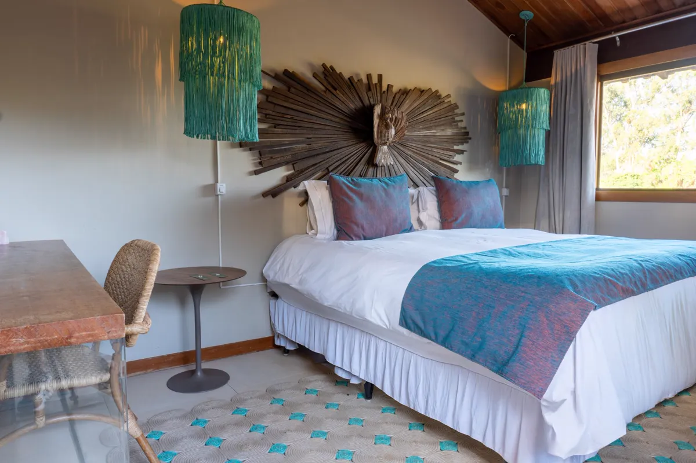
1 king-size bed. Main house, rooftop.
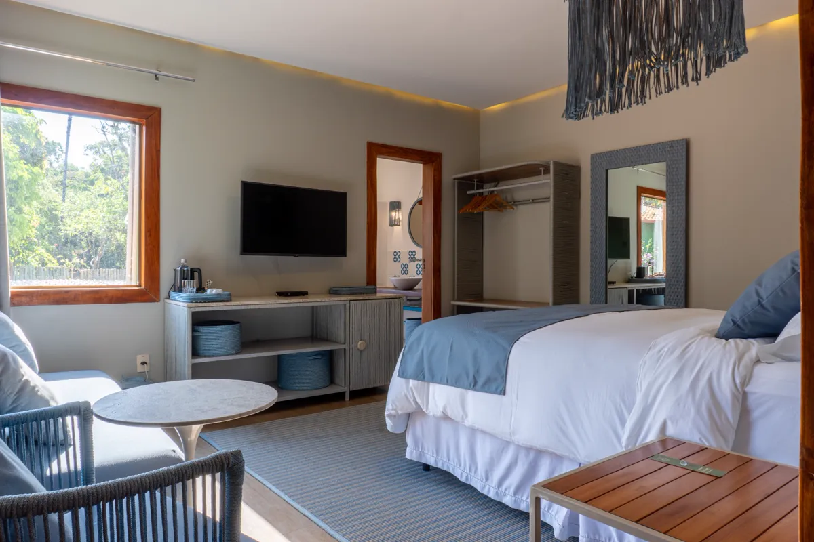
1 king-size bed + 2 single beds. Outdoor area.
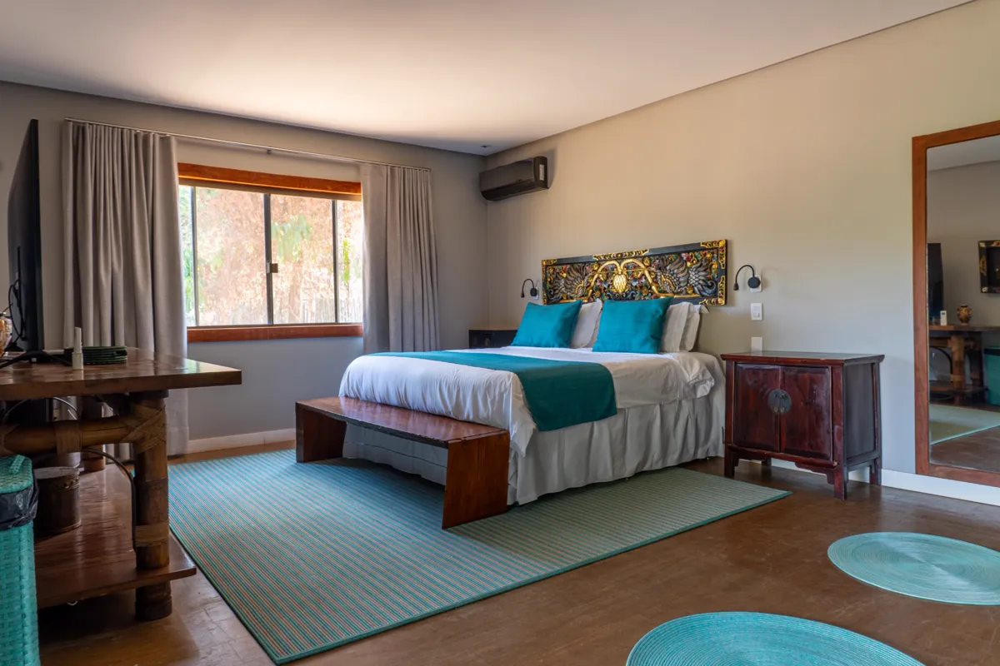
1 king-size bed + 2 single beds, in two bedrooms. Main house, 1st floor.
At Casa da Lua, the stay has a life of its own. Breakfast, water, spa, cinema, billiards, table and fire become part of the trip with the same weight as what happens outside the inn

Breakfast is included and served from 7:30 to 10:30 am. It is when the day gains direction without having to start in a hurry.

Water, a slide and late afternoon after the Chapada.

A layer of care so the body returns to its own rhythm.
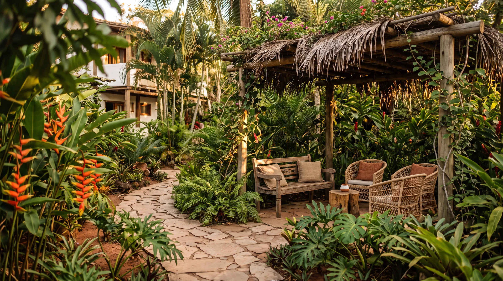
The outdoors works as a living room, a path and a place to linger.

Food, drinks and snacks within the house experience.

Ways to carry on the evening without having to go out.
In the dry season, the circle opens up for wine, conversation and sky.
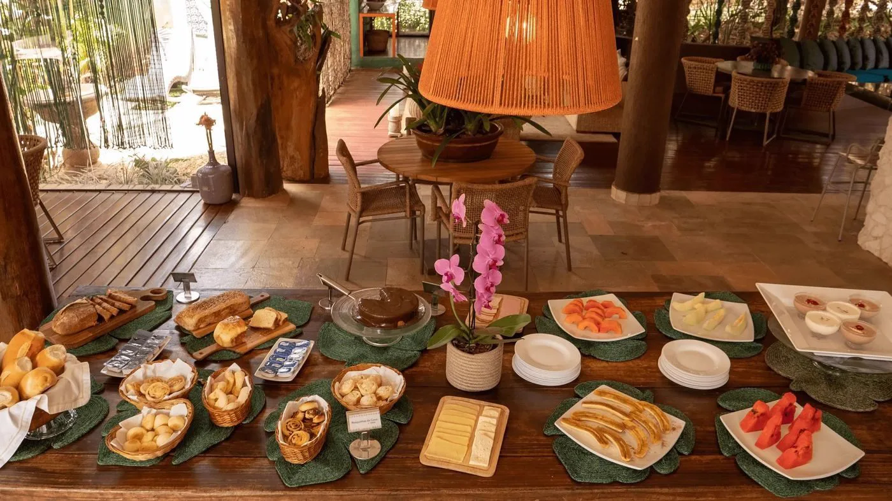
Served in the restaurant from 7:30 to 10:30 am, breakfast is included in the rate. It is one of the strongest moments of the house, because it brings together the table, the garden and the start of the day in one mood.
Cinema, billiards, table and fire appear as possibilities for those who prefer to stay in. Instead of imposing an itinerary, the night leaves room for each group to use the house in its own way.


A recurring program that brings together design, nature,
wellness, table and togetherness. The structure repeats;
some details may change in each edition

Arrival, transfer to Alto Paraíso, check-in and a dinner to open the group experience.
Reception and start of the route
Transfer and check-in at Casa da Lua
Welcome dinner
Landscape, water, travel and time outdoors
Yoga, sauna, hot tub, massage and pauses
Breakfast, a special lunch, dinner and shared food
Arrival, fire, conversations and farewell
Arrival, nature, yoga, table, massage and fire make up a library of images that can be reorganized according to the program


Casa da Lua hosts weddings, corporate immersions, retreats and celebrations with a hall, garden, covered areas and 15 suites on the same property
The garden can host the ceremony and the socializing; the hall and the covered area support the reception and the rain plan; the suites keep part of the group close by
Meals, content, reception or the main part of the rain plan.
Opens room for ceremonies, breaks, tables and socializing outdoors.
The canopy widens the possibilities and keeps the gathering going on rainy days.
8 categories and 15 suites make it possible to keep part of the group on the property.
The proposal already takes into account what happens in the hall, what stays under the covered area and how the group moves between accommodation, meals and program.
There are long trails, swims near town, wellness experiences and tables worth the trip. The curation helps you choose without turning the trip into a race

Saltos, Carrossel, Corredeiras, Cânions and Cariocas appear on routes of different intensity. The choice of trail should follow the group and the conditions of the day.

A short walk leads to rocks sculpted by the São Miguel River, with viewpoints, natural pools and a singular landscape in the Chapada.

A complex near Alto Paraíso, with walkways, pools and falls along circuits that let you choose how far to walk and where to stop.

The sequence of falls lets you combine a shorter access with longer walks. The Poço da Vovó is near the parking area and widens the options for groups with different paces.

Three waterfalls with different profiles let you build a day of viewpoint, trail and swimming without changing property.

The region brings together therapists and practices that can be arranged privately. The Casa da Lua team advises on what is available for each period.

A meal in the middle of the forest, beside the São Miguel River, with dishes prepared over fire and a path that is already part of the experience.

A risotto restaurant in São Jorge that brings Brazilian and Italian cooking close to the ingredients and aromas of the Cerrado.
Some outings take the whole day. Others fit in a morning or an afternoon.
Distance, terrain, age and mobility change the experience of each route quite a lot.
Weather, the need to book, the presence of a guide and the chance to swim can change the plan.
It is worth considering children, pets, transport and the real pace of the group before heading out.
A long day may call for water and a massage. A half day leaves room for the pool, cinema or fire. The curation connects the outside to what happens afterwards.
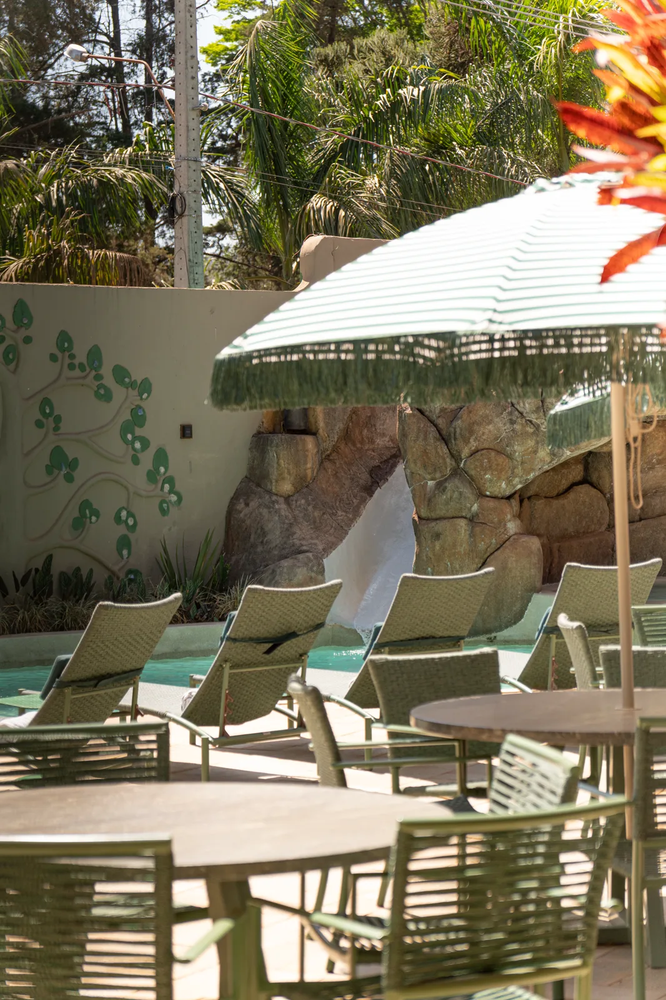
Talk to the team to confirm accommodation and current conditions.
Capacity varies by category. The team helps adjust the setup.
The current terms will be shown in the official booking engine.